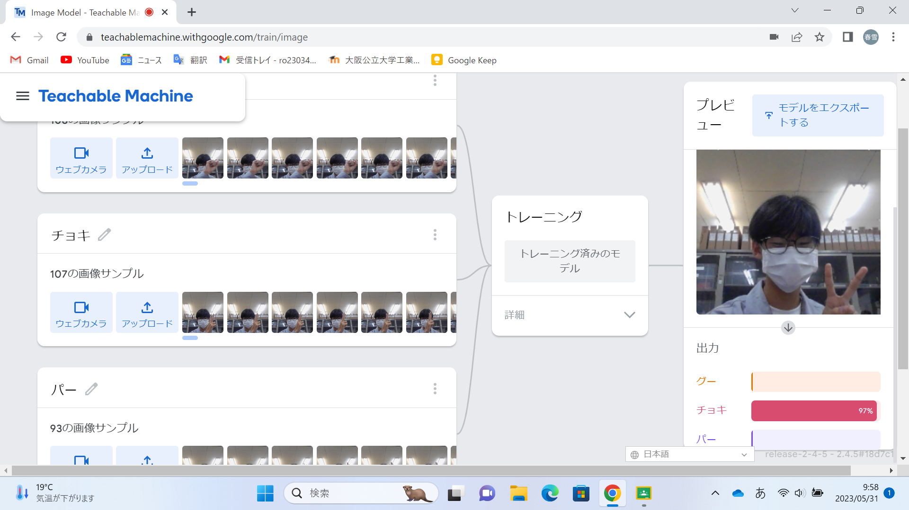
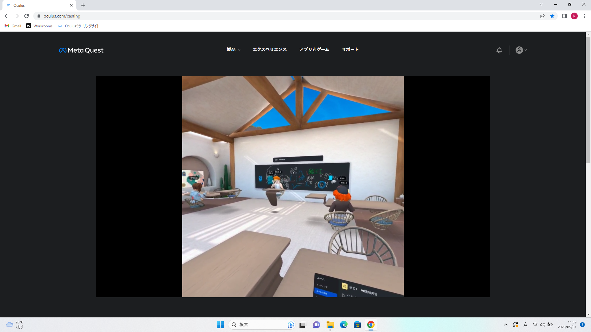

第2週目
2-1 １週目のレポートをHTMLで作る
１週目のレポート
1.内容
前回の授業の内容の続きで、１週目のレポートを全体で作製した。
2.感想
前回から日にちが経過し、内容を忘れかけていたが教えてもらうことで無事にレポートを作成することができた。
2-2 機械学習体験

1.内容
画像からじゃんけんのグー・チョキ・パーを判断できるよう機械に学習させた。
2.感想
読み込ませる画像の枚数を増やすことで、画像の読み取りの精度を上げることができた。しかし手を画面に映していないときグーと表示されることがあったため、何も表示していない画像も学習させるべきだった。
2-3 VR（バーチャルリアリティー：Virtual Reality）会議室の体験

1.内容
ＶＲゴーグルをつけてVR空間を体験した。
2.感想
VR空間で自分のアバターが実際に自分と同じ動きをしていてすごく感動した。目が慣れなくて疲れたがとても楽しくVRを体験できた。